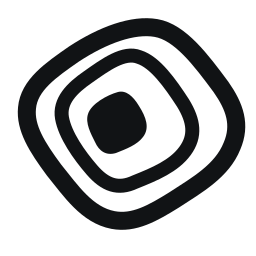

Keep the field intact.
The diagonal, softly squared outline and off-centre core carry the identity. The spaces are deliberately unequal. Keep the supplied geometry intact.
Use the supplied artwork.
- Keep both contours closed and the core separate.
- Leave clear space equal to half the core width on every side.
- Use the small mark below 32 px; prefer 24 px or larger.
- Do not centre the core, add rings, rotate, stretch or apply glow.
Logo usage and asset guide →Quiet field.
Active core.
Graphite and warm ivory carry most of the system. Signal orange belongs to the core and occasional emphasis. Emisar keeps its own green; product brands retain their identities.
Graphite#111315
Ivory#F2EEE5
Signal#FF6138
Use ivory on graphite or graphite on ivory for reading. Orange works with graphite for emphasis. Do not use orange body text on ivory.
Keep layouts open, rules thin and corners modest. The mark provides the organic form; avoid repeating it as a decorative pattern.
Type with room
to read.
IBM Plex Sans for headings and body copy. IBM Plex Mono for identifiers and technical labels. The distributed logo lettering is outlined, so it does not depend on a font being installed.
Let AI work.
Keep control.
Aa Bb Cc / 0123456789 / action_id
Use sentence case. Headings: semibold, tightly spaced, 1.1 line height. Body: regular, 1.5–1.6 line height, comfortable line lengths. Reserve uppercase for short metadata.
The approved wordmark combines a Plex Sans Regular foundation with wider round forms, custom r and t, and pair-specific spacing. Use the outlined artwork. Supporting fonts include their SIL Open Font License.
One company.
Distinct products.
Protectorate is the parent name. Coop, Emisar and Ryker keep their product names. Use ProtectorateHQ only for the GitHub handle, not as the wordmark.
Coop
Set boundaries for AI coding.
Emisar
Choose what AI can do on your systems.
Ryker
A teammate in Slack that investigates problems and prepares code changes.

A Protectorate productBrand assets.
SVG masters, avatar and banner artwork, and optical small-size marks. Use the brand guide for naming and logo rules, and the design guide for layout, typography and interaction.
{kind=link}
{kind=link}
{kind=link}
{kind=link}
{kind=link}
{kind=link}
{kind=link}
{kind=link}